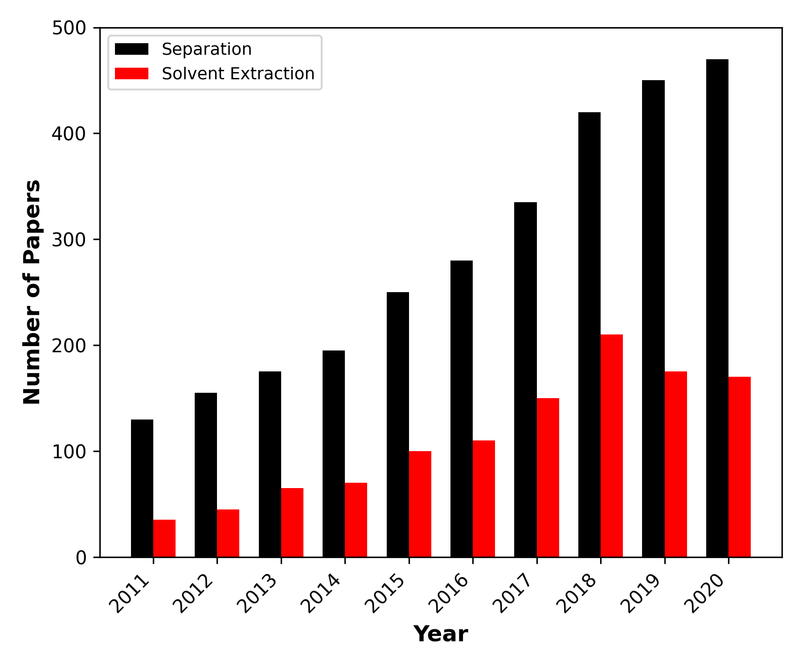

Source image: grouped_bargraph.png
| Field | Value |
|---|---|
| Chart title | (partially cropped at top — not fully visible) |
| X axis label | Year |
| X axis categories | 2011, 2012, 2013, 2014, 2015, 2016, 2017, 2018, 2019, 2020 |
| Y axis label | Number of Papers |
| Y axis unit | count |
| Y axis scale | linear |
| Y axis range | [0, 500] |
| Number of series | 2 |
| Error bars present | false |
| Error bar type | N/A |
| Legend present | Yes — inside plot, upper-left |
| Notes | A small red dot appears near (2020, ~350), likely a stray annotation or plotting artifact. Chart title is partially cropped. |
Series: Separation | Colour: black
| Year | Number of Papers |
|---|---|
| 2011 | 130 |
| 2012 | 155 |
| 2013 | 175 |
| 2014 | 195 |
| 2015 | 250 |
| 2016 | 280 |
| 2017 | 335 |
| 2018 | 420 |
| 2019 | 450 |
| 2020 | 470 |
Series: Solvent Extraction | Colour: red
| Year | Number of Papers |
|---|---|
| 2011 | 35 |
| 2012 | 45 |
| 2013 | 65 |
| 2014 | 70 |
| 2015 | 100 |
| 2016 | 110 |
| 2017 | 150 |
| 2018 | 210 |
| 2019 | 175 |
| 2020 | 170 |
